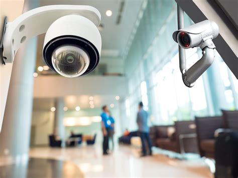

"Quality is a matter of Choice rather than Chance"
3S is an ever-evolving market leader that strives to retain its premium position in the industry through constant innovation, pro-active marketing and prompt after-sales service. Settings standards and surpassing them is something that comes habitually to us. 3S has been expanding its market, penetrating deeper & deeper into existing markets. 3S has been further delighting its customers and winning their confidence, creating brand equity, which is the envy of the entire industry. At 3S, the pursuit of excellence is a never-ending process.
To persistently pursue rejuvenation and success, driven by the needs of our customers and aspiring to become the most admired company in our industry. Our success will be the result of understanding our client’s requirement and exceeding their expectations, innovating to meet their needs and providing a dynamic and challenging work environment that presents opportunities for our employees.
To provide our customers peace of mind by delivering unparalleled products & services and improve the quality of peoples’ lives through timely introduction of meaningful technological innovations.